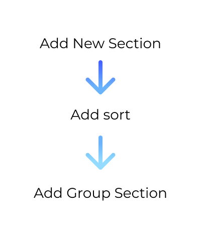
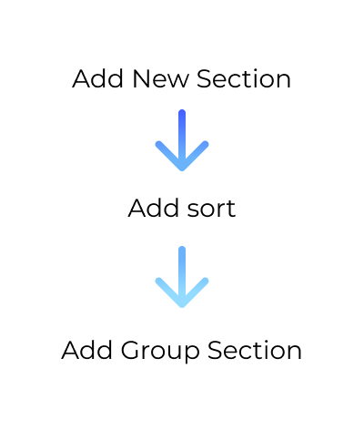

Business Intelligence and Data Analytics Report Builder
The Exago sales team was experiencing a year-long lull in sales. To combat this, the CEO decided to make a sudden and dramatic change to the roadmap. The product team dropped everything to elevate core product offerings, including Exago’s most valuable and best selling report building platform. The goal of this project was to make the sales evaluation process more effective and ultimately secure more deals.
Tools

Figma
UI Design and Sharing Mockups
Zoom
First Click Testing

Google Drive
Personas and Specification Document
Team and Timeline
Exago had a very small but talented team. The combined efforts of the product, development, and quality assurance teams were able to make quality improvements, proactively manage priorities, and meet aggressive deadlines.
The product team consisted of myself and the VP of product, Alex Agoado. I did the preliminary discovery research, user experience design, interface design, and tested the solution. Alex facilitated the persona discussion, wrote the specification document, and managed ongoing conversations around the project’s scope. We also met weekly with 5 people from the development and QA team to discuss technical limitations, design for edge cases that came up during development, and closely monitor the project’s progress.
The report builder project had an 8 month timeline and was running in parallel with one other major project and two other small projects that required our attention.


 
